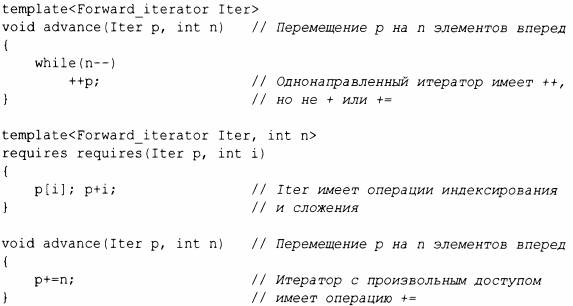
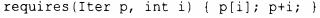

⇐7.2.2 Перегрузка на основе концептов 7.2.4 Определение концептов⇒
Вопрос о том, предлагает ли набор аргументов шаблона то, что шаблон требует от своих параметров, в конечном итоге сводится к тому, являются ли некоторые выражения корректными.
Используя выражение requires, мы можем проверить, корректен ли набор выражений. Например:
Нет, requires requires - не опечатка. Первый requires начинает конструкцию требований, а второй начинает requires-выpaжeниe
requires-выpaжeниe представляет собой предикат, который возвращает true, если инструкции в нем являются корректным кодом, и false - в противном случае.
Я рассматриваю rеquirеs-выражения как ассемблерный код обобщенного программирования. Как и обычный ассемблерный код, rеquirеs-выражения чрезвычайно гибкие и не налагают никакой дисциплины программирования. В той или иной форме они находятся "на дне" более интересного обобщенного кода, так же как ассемблерный код находится "на дне" наиболее интересного обычного кода. Подобно ассемблеру, rеquirеs-выражения не должны быть видны в "обычном коде". Если вы видите в своем коде requires requires, вероятно, ваш код на слишком низком уровне.
Использование requires requires в advance () преднамеренно неэлегантное и хакерское. Обратите внимание, что я "забыл" указать операцию += и типы результатов операций. Вы предупреждены! Предпочитайте именованные концепты, имя которых указывает их семантический смысл.
Отдавайте предпочтение правильно именованным понятиям с хорошо определенной семантикой (§7.2.4) и используйте rеquirеs-выражения в их определениях.